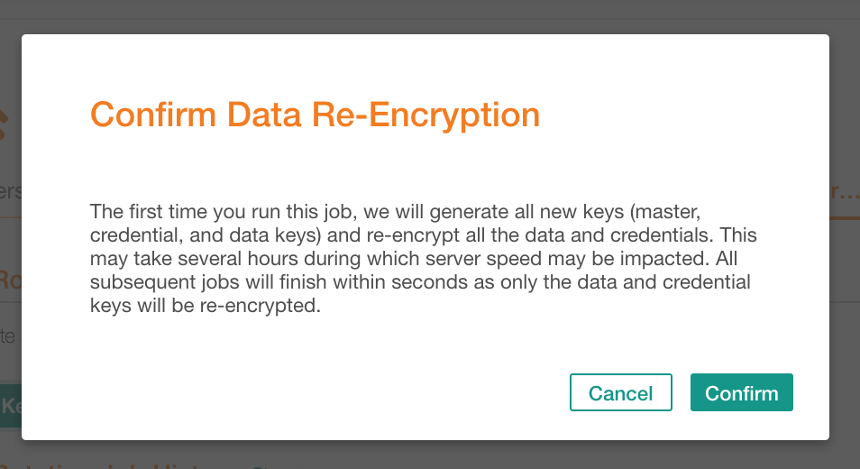
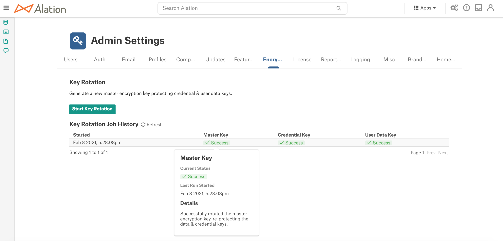
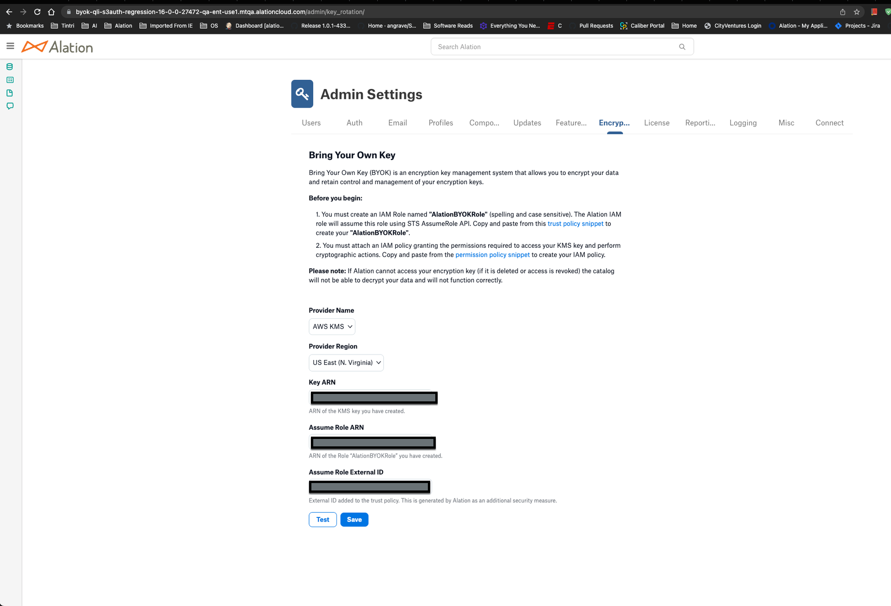
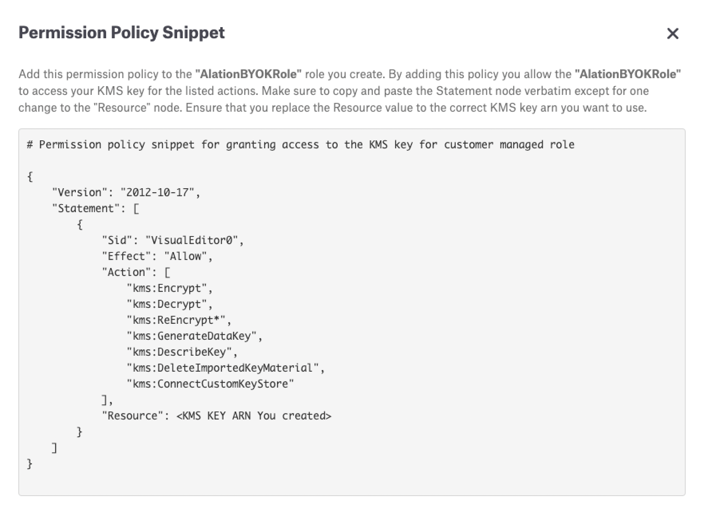
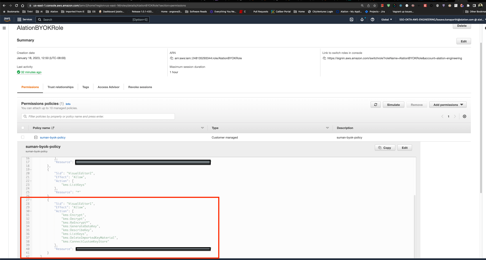
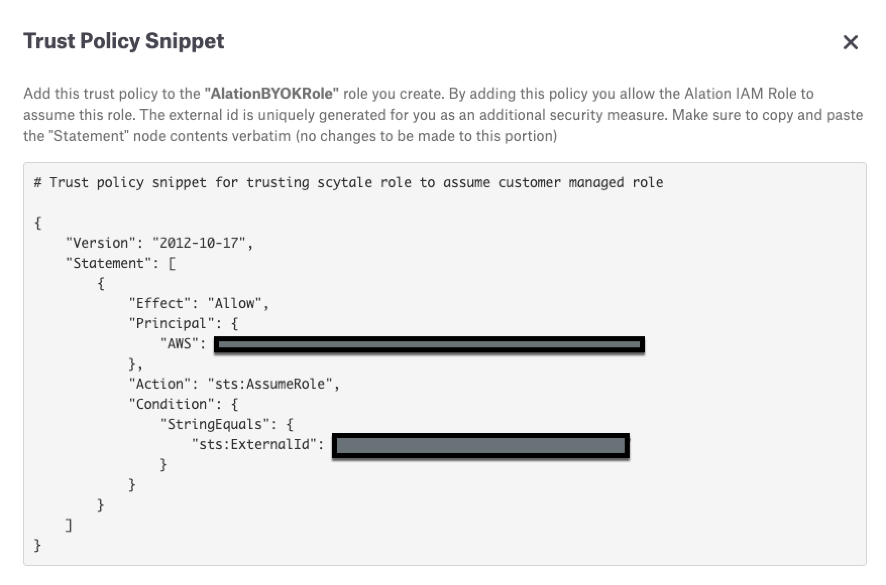
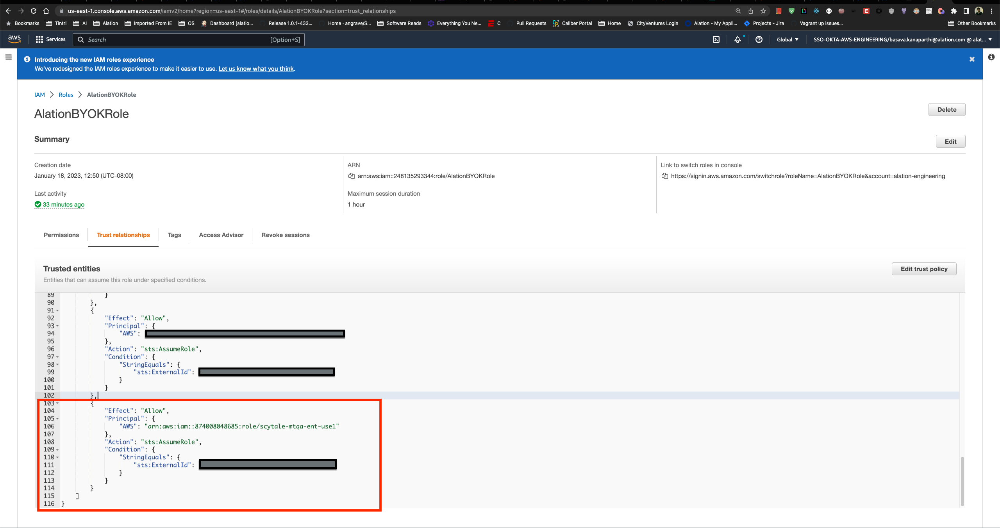
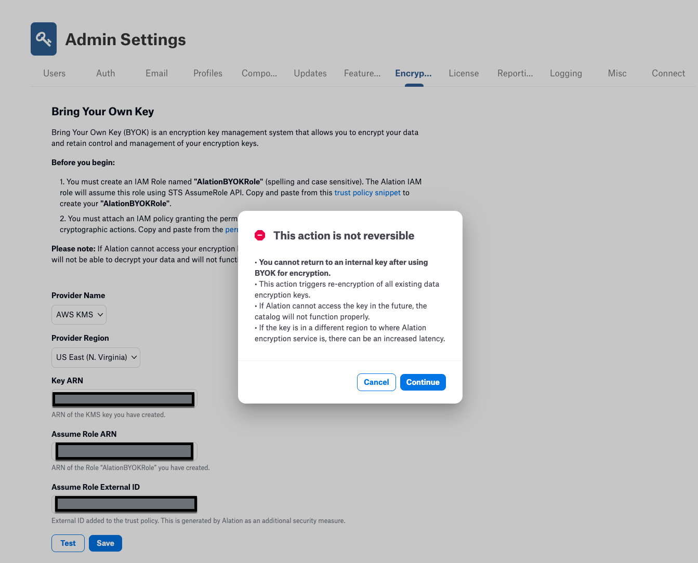
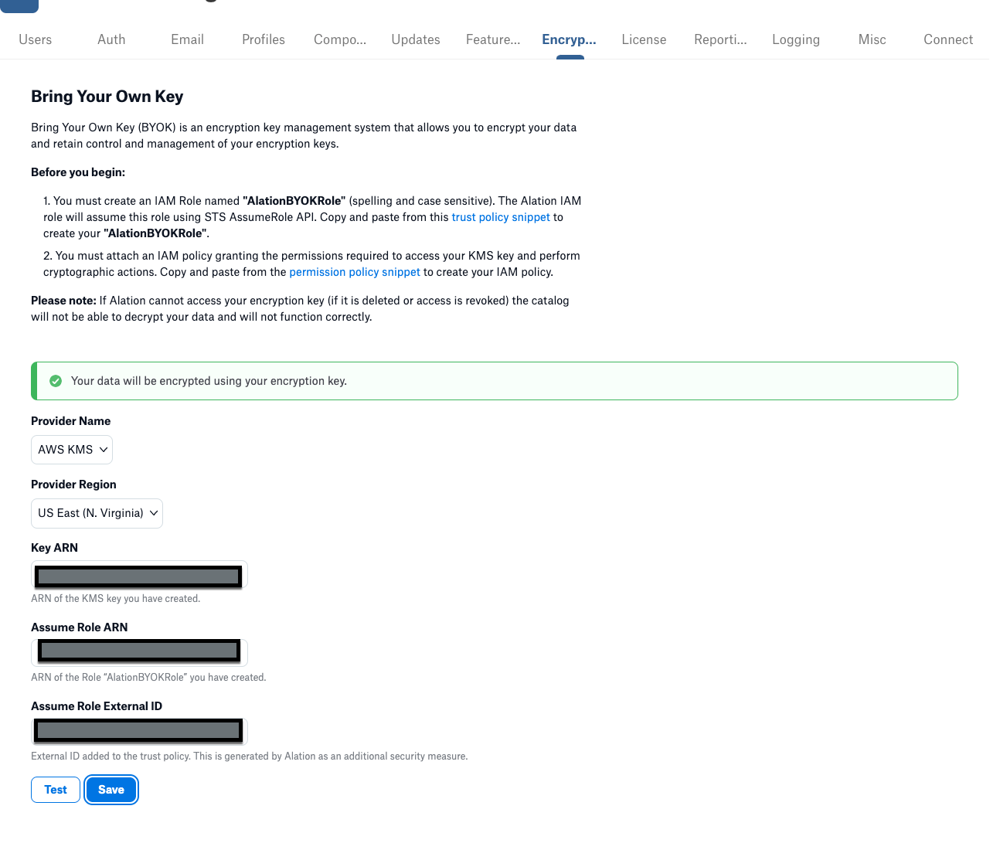

Manage Encryption Keys¶
Alation Cloud Service Applies to Alation Cloud Service instances of Alation
Customer Managed Applies to customer-managed instances of Alation
For all customer-managed Alation deployments, encryption keys are generated and stored internally in Alation, and the Encryption Key Rotation page allows you to regenerate those keys manually. This is described in Rotate Encryption Keys Manually.
For Enterprise Alation Cloud Service deployments, encryption keys are by default generated and rotated automatically. However, users may provide their own encryption keys using the Bring Your Own Encryption Key feature.
Rotate Encryption Keys Manually¶
You can rotate encryption keys on the Admin Settings page. Regular key rotation is a recommended practice to achieve compliance with data security requirements at an organization.
This requires the role of Server Admin.
Important
It is recommended to take a backup before starting Key Rotation by following steps in Create Backups Manually.
The initial key rotation process requires additional disk space (1.5 times the size of the internal database rosemeta).
Consider taking another backup after key rotation has finished. This may be a fail-safe if you may need to restore Alation from a backup before the next scheduled backup takes place. This backup will have the new encryption keys and will help avoid re-keying the data.
To rotate keys,
Sign in to Alation as a Server Admin and click the Admin Settings icon on the upper right to open the Admin Settings page. In the Server Admin section, click Encryption Key Rotation. This will open the Encryption Key Rotation tab:
Under Key Rotation, click Start Key Rotation and in the confirmation dialog that opens, click Confirm:
Important
Do not stop, start, or restart any Alation services until key rotation is complete. Stopping and starting services while key rotation is in progress may result in data corruption in the internal Postgres database.
Confirmation will initiate a key rotation job that you can monitor under Key Rotation Job History:

{kind=link}
{kind=link}
Note that the key rotation job cannot be scheduled. The key rotation schedule has to be managed outside Alation.
Bring Your Own Encryption Key¶
Alation Enterprise Edition supports Bring Your Own Encryption Key (BYOK), which allows you to use your own Amazon Web Services (AWS) KMS Key Management Service account to generate cloud encryption keys.
The BYOK option is used for increased security, allowing full control over the keys that are used to encrypt or decrypt data. With BYOK, you provide the encryption key that is used for encryption of data in the Alation Catalog.
This feature is enabled by default on Alation Cloud Service Enterprise Edition deployments with cloud-native architecture. Administration of the BYOK requires the Alation Server Admin role.
Limitations¶
There are some limitations to the BYOK functionality, including:
Once your KMS key is enabled for an instance, it cannot be reversed to using Alation’s KMS key. Be sure to exercise caution before enabling your KMS key.
Important
If BYOK is enabled, your KMS key service must be available and responding at all times to ensure proper functioning of the Alation Catalog. If the key is deleted or the key service is down, your Alation instance could become inoperative.
There is some transient data related to Query Log Ingestion (QLI) which will be stored as encrypted using Alation’s KMS key, even with BYOK enabled.
Initial Preparation from Your AWS Account¶
From your AWS Account, do the following:
Create an IAM Role with the name AlationBYOKRole.
Note
The role name must be exactly the same, including upper and lower case as the role name is case sensitive. This is so the Alation service account does not try to access any other role in your account, as there is a strict permission policy applied on the service account role to only assume the role with this specific name. See Creating a role to delegate permissions to an IAM user - AWS Identity and Access Management for more information.
Create a KMS Key that you want to use for encrypting data inside Alation.
Note
Alation requires this to be a symmetric key that is enabled. Having the key enabled allows Alation to use the KMS key for cryptographic operations. See Creating keys - AWS Key Management Service for more information.
Onboarding the AWS Managed Key to Alation¶
To onboard the AWS KMS Key to Alation, do the following:
In Alation, click the Settings icon in the upper right corner of the home page.
Click Server Admin > Encryption Key Rotation. The Bring Your Own Key page opens:
Under Provider Name, ensure that AWS KMS is selected.
Under Provider Region, select the appropriate region.
Under Key ARN, enter the Amazon Resource Name (ARN) for your generated key.
Under Assume Role ARN, enter the Amazon Resource Name (ARN) for your AlationBYOKRole.
Click the link for permission policy snippet to open the snippet:
Copy the snippet and in the AWS Console paste the snippet into the permissions policies for your AlationBYOKRole (substitute your actual Key ARN for the placeholder in the snippet):
This ensures that the AlationBYOKRole can access the KMS Key and perform the following operations on it:
"kms:Encrypt", "kms:Decrypt", "kms:ReEncrypt*", "kms:GenerateDataKey", "kms:DescribeKey", "kms:DeleteImportedKeyMaterial", "kms:ConnectCustomKeyStore"
In Alation, click the link for trust policy snippet to open the snippet:
Copy the snippet and in the AWS Console paste the snippet into the trust policies for your AlationBYOKRole:
This allows your Alation service account to assume the role AlationBYOKRole. The ExternalId value must be exchanged and agreed upon by Alation and your AWS account. Each Alation customer gets a unique ID that is automatically generated on Alation, and you can find this ID within the trust snippet. This ExternalID value should be included in the Trust Policy that you set up in your AWS account for the role AlationBYOKRole. This is done for increased security and to prevent vulnerabilities such as the “confused-deputy problem”.
When the required setup on your AWS account is complete, validate that Alation can access the KMS Key.
Click the Test button. When validation is complete, you will see a confirmation stating Alation is successful in accessing the KMS Key.
Click Save. A confirmation dialog displays, warning that the action is not reversible and reminding you of some of the limitations noted above.
Note
If the key is in a different region from the Alation service, there can be increased latency for normal operations on the Alation Catalog that could involve encrypting or decrypting data, for example, Data Profiling.
Click Continue to import the KMS Key into Alation. When the import is complete, a confirmation displays that your data will be encrypted using your encryption key.
